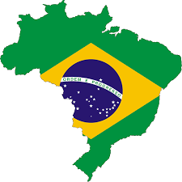
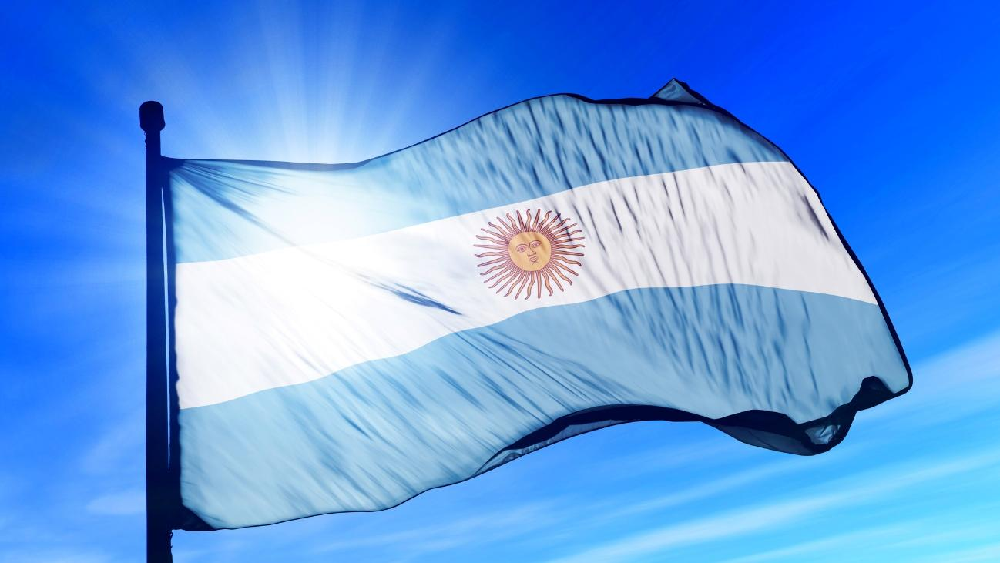

Brasil, oficialmente la República Federativa de Brasil891011 (en portugués: República Federativa do Brasil,
pron. AFI ( escuchar)) es un país soberano de América del Sur que comprende la mitad oriental del
subcontinente y algunos grupos de pequeñas islas en el océano Atlántico. Con una superficie estimada en más
de 8,5 millones de km², es el quinto país más grande del mundo en área total (equivalente a 47 % del
territorio sudamericano). Delimitado por el océano Atlántico al este, Brasil tiene una línea costera de
7491 km. Al norte limita con el departamento ultramarino francés de la Guayana Francesa, Surinam, Guyana y
Venezuela; al noroeste con Colombia; al oeste con Perú y Bolivia; al suroeste con Paraguay y Argentina, y
al sur con Uruguay. De este modo tiene frontera con todos los países de América del Sur, excepto Ecuador y
Chile. La mayor parte del país está comprendido entre los trópicos terrestres, por lo que las estaciones
climáticas no se sienten de una manera radical en gran parte de su territorio. La selva amazónica cubre
3,6 millones de km² del territorio. Gracias a su vegetación y al clima, es uno de los países con más especies
de animales en el mundo. Brasil, hasta entonces habitado por indígenas, tuvo su primer contacto con los europeos
en el año 1500 d.C a través de una expedición portuguesa liderada por Pedro Álvares Cabral. Tras el Tratado de
Tordesillas, el territorio brasileño fue el segmento del continente americano que correspondió al reino de Portugal,
del cual obtuvo su independencia el 7 de septiembre de 1822. Así, el país pasó de ser parte central del reino de
Portugal a un imperio para finalmente convertirse en una república. Su primera capital fue Salvador de Bahía, que
fue sustituida por Río de Janeiro hasta que se construyó una nueva capital, Brasilia.

Colombia se encuentra ubicada en América, en el extremo noroccidental de América del Sur. El país es travesado por la
cordillera de los Andes y la llanura amazónica, es el único país de América del Sur con costas sobre los océanos
Atlántico y Pacífico. Su ubicación latitudinal corresponde a 12º 27´46" norte y 4º 13´ 30" de latitud sur, lo cual
corresponde a la zona intertropical. El área total de Colombia es de 2 129 748 km² conformados por el territorio
continental y las aguas marítimas. El territorio continental de Colombia es de 1 141 748 km²3 y el marítimo de 988 000 km²,
de los cuales 658 000 km² están en el mar Caribe y 330 000 km² en el océano Pacífico donde se encuentran las islas de
Gorgona y Malpelo. Colombia posee diferentes zonas climáticas. Por debajo de 1000 metros (3281 pies) de altura el clima
es cálido (tierra caliente), donde las temperaturas están por encima de 24 °C (75.2 °F). Cerca de 82,5 % de la
superficie total del país se encuentra en clima cálido. La mayoría de la población del país vive en el clima templado
(tierra templada, entre 1000 y 2000 metros de altura (3284 pies y 6562 pies), donde las temperaturas varían entre
17 y 24 °C (62.6 y 75.2 °F) y el clima frío (tierra fría, 2000 y 3000 metros de altura (6565 y 9843 pies).